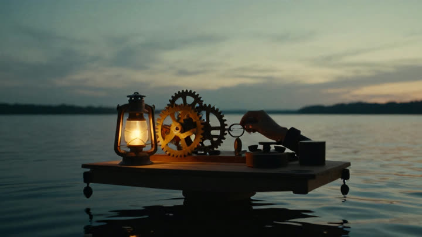

A clockmaker in a flooded city repairs the hours people lose
Drawing scene 3 — Restored Hours · 38s elapsed · scene 1 and 2 ready
 01
pull out
01
pull out
Morning Flood
melancholic
When the city swallows the sun's first hour, Eli collects the moments it took.Narrator · George

02 push inRepairing Time
tense
Hold it still, Mira. An hour this bent does not want to be found.Eli the Clockmaker · Michael
drawing
03
Restored Hours
joyful
Look — the clock above the market is running again. Mira · Nicole
storyboard uses 3 images · the full render adds 7